CAPÍTULO 2 - Potenciação e propriedades
Expoente inteiro
Vamos relembrar a potenciação e ampliar nosso estudo para o caso em que o expoente é um número inteiro.
- Troque ideias com um colega e, em seus cadernos, calculem as seguintes potências:
- (-6)2
- (0,4)3
- (-8)1
- (-3)3
- (12)2

Nas potências que vocês resolveram, os expoentes eram números inteiros positivos. E quando o expoente for um número inteiro negativo? Como resolvemos?
Para entendermos o significado do expoente inteiro negativo em uma potência, vamos recorrer a uma das propriedades da potenciação estudada no 7.º ano, a divisão de potências de mesma base. Observe:
- (I)
Agora, resolvendo essa divisão, aplicando a propriedade de divisão de potências de mesma base, temos:
- (II)
20
Comparando (I) e (II), podemos concluir que:
Vejamos outra divisão:
- (I)
Resolvendo-a, aplicando a propriedade de divisão de potências de mesma base, temos:
- (II)
Comparando (I) e (II) podemos concluir que:

Exemplos:
- ►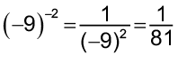 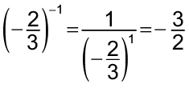
- 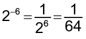 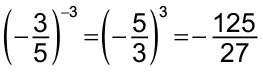
Propriedades da potenciação
Vamos relembrar as propriedades da potenciação estudadas no 7.º ano e conhecer uma nova propriedade.
Multiplicação de potências de mesma base
- 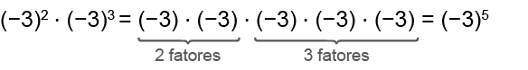
Ou seja,
(-3)2 ∙ (-3)3 = (-3)2+3 = (-3)5
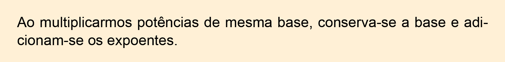
Veja outros exemplos:
- 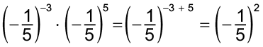
- 27 ∙ 23 = 27+3 = 210
21
Divisão de potências de mesma base
- 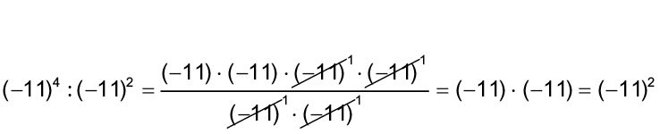
Ou seja,
(-11)4 : (-11)2 = (-11)4-2 = (-11)2
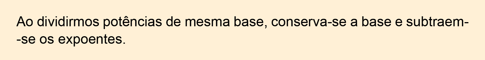
Veja outros exemplos:
- (-0,7)6 ∙ (-0,7)3 = (-0,7)6-3 = (-0,7)3
- 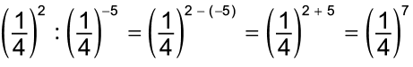
Potência de uma potência
- [(-13)4]2 = (-13)4 ∙ (-13)4 = (-13)4+4 = (-13)8
Ou seja,
[(-13)4]2 = (-13)4 ∙ 2 = (-13)8
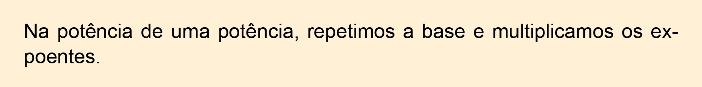
Veja outros exemplos:
- 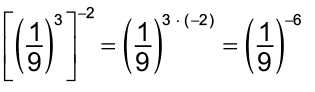
- 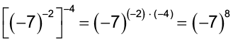
- 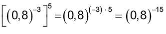
22
Atenção!
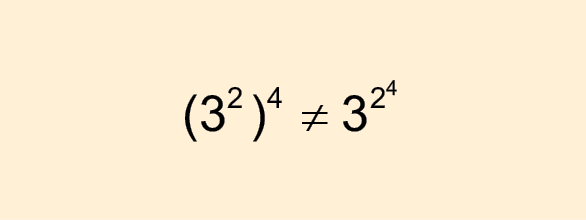
No primeiro caso, 32 está elevado à quarta potência, e no segundo caso, somente o expoente 2 está elevado à quarta potência, observe:
- (32)4 = 38
- 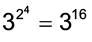
Potência de uma multiplicação ou divisão
- 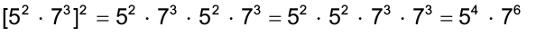
Ou seja,
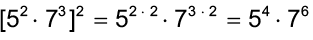
- 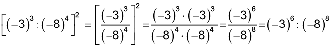
Ou seja,
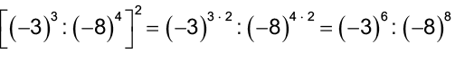
Veja outros exemplos:
- 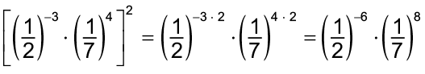
- 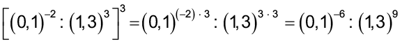
23
►Encontre soluções
- Copie as tabelas a seguir, em seu caderno, e resolva as potências.
- Calcule o valor das potências:
- 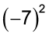
- 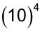
- 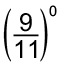
- 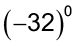
- 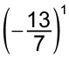
- 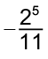

- 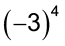
- 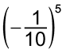
- 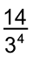
- 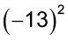
- 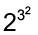
- 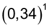
- Aplicando as propriedades da potenciação escreva, no caderno, na forma de uma única potência.
- 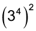
- 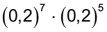
- 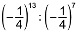
- 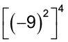
- 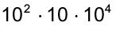
- 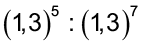
- 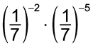
- 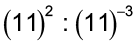
- No caderno, calcule:
- Qual é a potência que representa:
- a metade de 210?
- a terça parte de 37?
- o quádruplo de 43?
- o quíntuplo de 55?
- o dobro de 24?
- a quinta parte de 53?
- o triplo de 39?
- No caderno, escreva o número:
- 1 024 na forma de potência de base 2.
- na forma de potência de base 2.
- 243 na forma de potência de base 3.
- na forma de potência de base 4.
- na forma de potência de base 5.
- Resolva a expressão em seu caderno.
- Sendo m = e n = , determine o valor de:
- m + n
- m - n